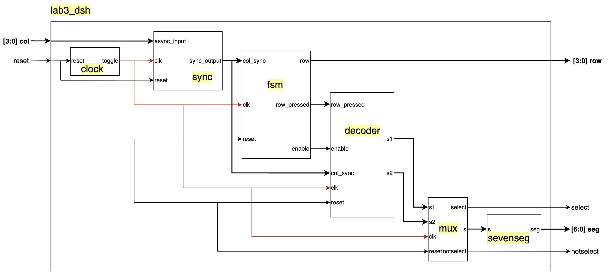

Lab 3: Keypad Scanner
Sebastian Heredia | dheredia@g.hmc.edu | October 15, 2025
Introduction
In this lab, a design was implemened on an an FPGA to scan a 4x4 keypad matrix for key presses and display the selected presses as hexadecimal numbers 0 to F on a dual 7-segment display, with the most recent entry appearing on the right. When a key is pressed, it is recorded exactly once no matter how long or short the user holds the key down. Moreover, if additional keys are pressed while still holding down the first key, the additional keys are ignored.
Methods & Design
Lab Overview
When a button is pressed on the keypad, a short is formed between the corresponding row and column of the key connecting them. Since user inputs can occur whenever the user chooses, the two main phenomenons to overcome in this lab were metastability and switch bouncing.
In digital electronics, switch bouncing is a phenomenon where signals from a switch can appear as if they are pressed multiple times in short time frame before fully settling as shown in Figure 1. This is a results of the physical nature of a button, where two pieces of metal must touch in order to create an electrical connection. Depending on the type of push button used, switch bouncing can range from microseconds to miliseconds. Figure 2 shows the key arrangement and keypad pinout for this lab.
To manage switch bouncing, a clock divider was used to generate a slow clock of 240Hz which is slow enough to avoid sampling quick switch bouncing. At 240Hz, the clock is slow enough to sample the stabilized switch input after boucing would occur but still toggle at a rate faster than humans can observe to ensure seamless visual transitions for other time-based functions in the lab (e.i. multiplexing the two halves of the dual 7-segment display.
Figure 1: 4x4 keypad configuration and pinout.
Figure 2: Switch bouncing can trigger multiple signals.
In addition to switch bouncing, metastability also needed to be accounted for. Metastabiliity describes the temporary unstable state in which a signal does not settle into a defined 0 or 1 logic level by the time that it must be sample which can which to incorrect sampling of a signal. This can happen when a asynchronous sinals such as a user input interacts with a synchronous circuit, where the input signal’s timing is unpredictable relative to the circuit’s clock. Figure 3 below at left provided by the Harvey Mudd College E85 Chapter 3 lectue proovides a visual representation of metastability.
Figure 3: Metastability leads to unpredictable outcomes.
Figure 4: Synchronizers set signals to a known clock freq.
To resolve metastability and ensure defined user inputs, a synchronizer shown in Figure 4 above at right was implemented. A synchronizer works my using one flip-flop to catch an asynchronous signal at D and a second flip-flop to output the signal on Q that is now output synchronously at the same time of the circuit’s clock.
FSM Diagram
In order to ensure that when a button is held it registers as a single press and you can’t press other button while the original press is held, a finite state machine (FSM) was created. Figure 5 below shows the FSM design which contains five sets of states: row (r), pressed (p), synced (s), enable (e), and wait (w).
Figure 5: The FSM created to implement the design used 5 sets of states: row (r), pressed (p), synced (s), enable (e), wait (w).
FSM Logic & State Transition Table
row (r)
To start, the design was setup so that columns were active HIGH (1) when a button in that column was pressed and the rows were initially set to continuously be scanned. In this way, when no buttons are pressed, press = 0 and the current state would loop through the row (r) states according to the state transition table described in Table 1 below. The row output row_pressed encodes which physical row is active so that the column inputs can be read relateive to the currently driven row.
pressed (p) + synced (s)
A pressed (p) state is entered immediately after the scan logic detects a key press. This state exists to capture the asynchronous column information while isolating it from the row scanner. This effectively marks the beginning of the press-handling pipeline. Since the column signals are asynchronous with respect to the FSM clock, this states always hands off to the synced (s) stage. The synced (s) states serve to align the correct columns and rows in time. Since these states pure exist to align timing between the correct rows and columns, the next state logic is always true.
enable (e)
The enable (e) states generate a single-cycle indication that a valid key press has been detected and accepted (e.i. only one key has been pressed). In the enable (e) states, the FSM asserts the enable output and maintains the row_pressed encoding for the pressed row. This pulse is used by the kpad_decoder.sv module to display the newly recognized key exactly once, with new numbers appearing from right to left on the dual 7-segment display.
wait (w)
The wait (w) states keep the FSM in a stable holding pattern while the initial key remains pressed. This state repeatedly checks oneCol to detect if the same column is still active. If oneCol remains HIGH (1), the FSM waiting in this state, preventing repeated enables or accepting other keys. When oneCol becomes LOW (0) when the key is released or changed, the FSM returns to the appropriate ’row (r)` scanning state and resumes normal scanning until another key is pressed.
Table 1: State transition table for the Lab 3 FSM design.
| Row | Current State | Input Condition | Next State | row_pressed / enable |
|---|---|---|---|---|
| Row 0 | r0 | press == 1 |
p0 | 0100 / 0 |
| r0 | else |
r1 | 0100 / 0 |
|
| p0 | — | s0 | 0100 / 0 |
|
| s0 | — | e0 | 0100 / 0 |
|
| e0 | — | w0 | 0100 / 1 |
|
| w0 | oneCol == 1 |
w0 | 0100 / 0 |
|
| w0 | else |
r0 | 0100 / 0 |
|
| Row 1 | r1 | press == 1 |
p1 | 1000 / 0 |
| r1 | else |
r2 | 1000 / 0 |
|
| p1 | — | s1 | 1000 / 0 |
|
| s1 | — | e1 | 1000 / 0 |
|
| e1 | — | w1 | 1000 / 1 |
|
| w1 | oneCol == 1 |
w1 | 1000 / 0 |
|
| w1 | else |
r1 | 1000 / 0 |
|
| Row 2 | r2 | press == 1 |
p2 | 0001 / 0 |
| r2 | else |
r3 | 0001 / 0 |
|
| p2 | — | s2 | 0001 / 0 |
|
| s2 | — | e2 | 0001 / 0 |
|
| e2 | — | w2 | 0001 / 1 |
|
| w2 | oneCol == 1 |
w2 | 0001 / 0 |
|
| w2 | else |
r2 | 0001 / 0 |
|
| Row 3 | r3 | press == 1 |
p3 | 0010 / 0 |
| r3 | else |
r0 | 0010 / 0 |
|
| p3 | — | s3 | 0010 / 0 |
|
| s3 | — | e3 | 0010 / 0 |
|
| e3 | — | w3 | 0010 / 1 |
|
| w3 | oneCol == 1 |
w3 | 0010 / 0 |
|
| w3 | else |
r3 | 0010 / 0 |
Technical Documentation
This lab represented the culmination of Lab 1 and Lab 2 design topics and modules. Namely, components from previous labs such as clock.sv and sevensegment.sv were recycled. Ultimately, the Lab 3 design consisted of seven modules and the schematic pictured in Figure 6 below describes the high-level arrangement of the modules and figure 7 shows the electrical schematic for the design.
 Figure 6: Lab 3 leveraged a slow clock divider, synchronizer, FSM, mux, and keypad and segment decoders.
Figure 7: The main hardware components for Lab 3 were the keypad, a dual 7-segment, and a pair of PNP transistors.
Results & Discussion
The design accomplished all the intended tasks. Testbenches for lab3_dsh.sv, kpad_fsm.sv, and kpad_decoder.sv modules were succesfully simulated in Questa to verify correct functionality of reading rows, debouncing columns, syncing columns, decoding rows and columns, displaying digits, updating digits from right to left, and ensuring all specifications were met.
- Lab 3 - Specifications:
- Each button press registers only once
- Dual seven-segment display shows the last two hexadecimal digits pressed
- Most recent numeric entry is shown on the right
- Only registers first press if additional buttons are pressed while holding down one button
Questa Verification
Figure 7: Multiplexing, digit updating, row scanning, and fsm functions were all validated in Questa for lab3_dsh.sv.
Figure 8: For all states, current and next state logic for matched expectations in Questa for kpad_fsm.sv.
Figure 9: All row and column combinations for the 16 keys were successfully decoded by kpad_decoder.sv.
Design Trade-Offs
In this lab, switch bounce was managed by dividing the 48MHz system clock to just 240Hz for keypad scanning logic. This approach effectively served as a sampling-based debounce filter because the sampling period of 4.17 ms is longer than the typical mechanical bounce duration. The main advantage of this strategy is its simplicity—there are no extra hardware components or complex logic required. It also integrates seamlessly with the row-scanning FSM, since the same divided clock can be reused for display multiplexing and state transitions.
However, this simplicity comes with trade-offs. The slow clock introduces inherent latency between when a key is pressed and when it is recognized (up to one full sample period in the worst case). For a human-operated keypad this delay is acceptable, but it would be limiting in systems that require rapid input response or simultaneous multi-key handling. The other downside is loss of time resolution because inputs are only checked every 4.17 ms, so the FSM may not be able to accurately manage more complex button pressing patterns.
Conclusion & Demo
All designs were successfully implemented. The lab took 64 hours to complete.
In this lab, I learned to work with asynchronous inputs with a two-stage synchronizer to prevent metastability from messing up key detection. I also gained practice with designing FSMs to complete non-trivial tasks. Moreover, running all simulations in Questa before touching the hardware reinforced the value of thorough testing and made debugging the actual FPGA far faster and less stressful. Above all, this this lab stretched my grit and endurance, as I spent over a full-time job worth of weekly work hours to complete it. This lab taught be valuable lessons in perservance that I will continue to apply to all areas of my life. Never give up!
AI Prototype
The purpose of the AI Prototype is to experiment with usign AI as a coding assistant to produce HDL. The following prompt was entered to ChatGPT 5.0.
Prototype A: Monolithic Prompt (All-at-once)
LLM Prompt: Whole Lab (Monolithic)
Target device: Lattice iCE40 UP5K FPGA with internal high-speed oscillator (~20 MHz).
Write synthesizable SystemVerilog to scan a 4x4 matrix keypad and display the last two hex keys pressed on a dual 7‑segment display.
Implement:
- A clock divider that derives a scan clock on the order of 100–200 Hz from the internal oscillator.
- A keypad scanning controller that iterates one active‑low column at a time and samples active‑low rows, registering at most one key per press (debounce‑by‑design), ignoring additional presses while any key is held, and allowing a new registration only after release.
- A top level that updates two hex digits (older and most recent) when a new key is registered and drives a time‑multiplexed two‑digit 7‑segment display without visible flicker and with balanced brightness.
Use idiomatic SystemVerilog (e.g., logic, always_ff, enumerated states for FSMs). Provide clean module boundaries and keep all state synchronous. Include brief comments explaining the design choices.
When given the monolithic prompt, ChatpGPT produced a series of SystemVerilog scripts that were capable of being synthesized in Lattice Radiant on the first try. The modules that were produced closely mirrored my design approach with a clock divider, keypad scanner, and a method of aligning rows and columns. However, the design did not follow the same fsm approach that I had. Instead, using a slow clock, the design used a clock with a frequency of 20MHz and required two FSMs: 1) Scanning Logic, 2) Debouncing. Figure 10 below shows the neatly organized RTL schematic produced in Lattice Radiant for the Prompt A code. Notably, the design contains two hex7seg decoders when only one is necessary if time multiplexing is applied.
Figure 9: Prompt A RLT schematic of the SystemVerilog script produced by ChatGPT 5.0.
Prototype B: Modular Prompts (Decompose into FSMs)
LLM Prompt 1: One‑shot Registration (Debounce‑by‑design)
Target device: Lattice iCE40 UP5K FPGA.
Overall Goal: Write SystemVerilog to scan a 4x4 matrix keypad and display the last two hex keys pressed on a dual 7 segment display.
Current Goal: Write a synthesizable SystemVerilog module that produces a one‑shot registration signal for the keypad system.
Behavior:
- When a key press is first detected, capture the current key code and assert a single‑cycle “new key” pulse.
- While any key remains pressed, do not accept additional keys.
- Only after keys are released should a subsequent press be recognized.
- This should handle debouncing of the keys.
Implement as a small synchronous FSM with enumerated states and glitch‑free outputs. Keep names and interfaces reasonable; do not assume any hidden modules beyond what you define here.
LLM Prompt 2: Keypad Scanner Controller
Target device: Lattice iCE40 UP5K FPGA.
Write a synthesizable SystemVerilog module that cycles through keypad columns (active‑low, one at a time) and samples rows (active‑low) to detect a single key at a time.
Behavior:
- Iterate columns at a suitable scan rate derived from the divided clock and sample rows.
- When a key is detected, report a stable key code consistent with a standard 4x4 keypad layout and maintain it while the key remains pressed.
- Provide a boolean signal indicating whether any key is currently pressed.
Use clean state encoding and synchronous logic; avoid combinational feedback and latches.
LLM Prompt 3: Integrate and Display
Target device: Lattice iCE40 UP5K FPGA with internal oscillator as the root clock source.
Write a top-level SystemVerilog module that instantiates the scanner and one-shot modules, shifts the last two keys (older ← most recent; most recent ← new), and drives a multiplexed two-digit seven-segment display.
Requirements:
- Update the displayed digits only when a new key is registered.
- Ensure equal apparent brightness and no visible flicker.
- Keep all logic synthesizable and synchronous; use idiomatic SystemVerilog constructs.
Provide any small clock-enable or divider logic you need. You can also assume that a sevenSegment module exists that takes a 4-bit input and outputs the 7 segments.
When given the decomposed prompts, ChatGPT was unable to produce synthesizable code in Lattice Radiant on the first try because I had not uploaded my sevensegment module to the project. Adding the module allowed for the AI generated code to synthesize. However, the code that was produced by Prompt B was not nearly as idiomatically organized as the code given by Prompt A. Figure 10 below shows the RTL schematic produced in Lattice Radiant when given the synthesizable Prompt B code. Notably, this time, ChatGPT used a system clock with a frequency of 12MHz. Trying to make sense of the code and RTL for this design was not simple since there are lot more hardware components to account for. Overall, I prefer to work with the code produced from Prompt A since it is more intuitive to me in code and visually, and therefore should be easier to understand and debug.
Figure 10: Prompt B RLT schematic of the SystemVerilog script produced by ChatGPT 5.0.